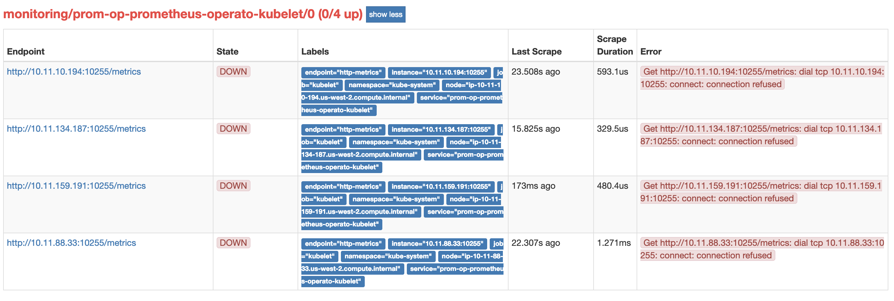
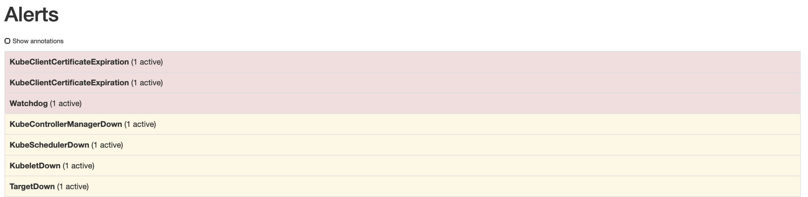

<!DOCTYPE html>
<html lang="en">

<!-- Head tag -->
<head><meta name="generator" content="Hexo 3.9.0">
    <meta charset="utf-8">
    <meta http-equiv="X-UA-Compatible" content="IE=edge">
    <meta name="google-site-verification" content="jJnpQjFutFaHT1yZV38mcuySEQjIm1b_DWfx3GfBoII">
    <meta name="viewport" content="width=device-width, initial-scale=1">
    <meta name="description" content="Notes about technology, DevOps, programming, and database">
    <meta name="keyword" content="AWS, golang, python, DevOps">
    <meta property="og:title" content="利用 Helm 在 EKS 上安裝 Prometheus - Kakashi&#39;s Blog">
    <meta property="og:description" content="一些踩雷經驗">
    <meta property="og:image" content="http://kkc.github.io/2019/02/25/install-prometheus-on-EKS/fire.jpeg">
    <link rel="shortcut icon" href="/img/favicon.ico">
    <!-- Place this tag in your head or just before your close body tag. -->
    <script async defer src="https://buttons.github.io/buttons.js"></script>
    <title>
        
          利用 Helm 在 EKS 上安裝 Prometheus - Kakashi&#39;s Blog
        
    </title>

    <link rel="canonical" href="http://kkc.github.io/2019/02/25/install-prometheus-on-EKS/">

    <!-- Bootstrap Core CSS -->
    <link rel="stylesheet" href="/css/bootstrap.min.css">

    <!-- Custom CSS --> 
    <link rel="stylesheet" href="/css/beantech.min.css">
    
    <!-- Pygments Highlight CSS -->
    <link rel="stylesheet" href="/css/highlight.css">

    <link rel="stylesheet" href="/css/widget.css">

    <link rel="stylesheet" href="/css/rocket.css">

    <link rel="stylesheet" href="/css/signature.css">

    <link rel="stylesheet" href="/css/toc.css">

    <!-- Custom Fonts -->
    <link href="https://maxcdn.bootstrapcdn.com/font-awesome/4.7.0/css/font-awesome.min.css" rel="stylesheet" type="text/css">
    <link href="http://fonts.googleapis.com/css?family=Lora:400,700,400italic,700italic" rel="stylesheet" type="text/css">
    <link href="http://fonts.googleapis.com/css?family=Open+Sans:300italic,400italic,600italic,700italic,800italic,400,300,600,700,800" rel="stylesheet" type="text/
    css">

    <!-- HTML5 Shim and Respond.js IE8 support of HTML5 elements and media queries -->
    <!-- WARNING: Respond.js doesn't work if you view the page via file:// -->
    <!--[if lt IE 9]>
        <script src="https://oss.maxcdn.com/libs/html5shiv/3.7.0/html5shiv.js"></script>
        <script src="https://oss.maxcdn.com/libs/respond.js/1.4.2/respond.min.js"></script>
    <![endif]-->

    <!-- ga & ba script hoook -->
    <script></script>
</head>


<!-- hack iOS CSS :active style -->
<body ontouchstart="">
	<!-- Modified by Yu-Hsuan Yen -->
<!-- Post Header -->
<style type="text/css">
    header.intro-header{
        
            background-image: url('fire.jpeg')
            /*post*/
        
    }
    
</style>

<header class="intro-header" >
    <!-- Signature -->
    <div id="signature">
        <div class="container">
            <div class="row">
                <div class="col-lg-8 col-lg-offset-2 col-md-10 col-md-offset-1">
                
                    <div class="post-heading">
                        <div class="tags">
                            
                              <a class="tag" href="/tags/#AWS" title="AWS">AWS</a>
                            
                              <a class="tag" href="/tags/#EKS" title="EKS">EKS</a>
                            
                              <a class="tag" href="/tags/#prometheus" title="prometheus">prometheus</a>
                            
                              <a class="tag" href="/tags/#monitoring" title="monitoring">monitoring</a>
                            
                              <a class="tag" href="/tags/#kubernetes" title="kubernetes">kubernetes</a>
                            
                              <a class="tag" href="/tags/#helm" title="helm">helm</a>
                            
                        </div>
                        <h1>利用 Helm 在 EKS 上安裝 Prometheus</h1>
                        <h2 class="subheading">一些踩雷經驗</h2>
                        <span class="meta">
                            Posted by Kakashi on
                            2019-02-25
                        </span>
                    </div>
                


                </div>
            </div>
        </div>
    </div>
</header>

	
    <!-- Navigation -->
<nav class="navbar navbar-default navbar-custom navbar-fixed-top">
    <div class="container-fluid">
        <!-- Brand and toggle get grouped for better mobile display -->
        <div class="navbar-header page-scroll">
            <button type="button" class="navbar-toggle">
                <span class="sr-only">Toggle navigation</span>
                <span class="icon-bar"></span>
                <span class="icon-bar"></span>
                <span class="icon-bar"></span>
            </button>
            <a class="navbar-brand" href="/">Kakashi&#39;s Notes</a>
        </div>

        <!-- Collect the nav links, forms, and other content for toggling -->
        <!-- Known Issue, found by Hux:
            <nav>'s height woule be hold on by its content.
            so, when navbar scale out, the <nav> will cover tags.
            also mask any touch event of tags, unfortunately.
        -->
        <div id="huxblog_navbar">
            <div class="navbar-collapse">
                <ul class="nav navbar-nav navbar-right">
                    <li>
                        <a href="/">Home</a>
                    </li>

                    

                        
                    

                        
                        <li>
                            <a href="/archive/">Archives</a>
                        </li>
                        
                    

                        
                        <li>
                            <a href="/tags/">Tags</a>
                        </li>
                        
                    

                    <li>
                        <a href="/atom.xml">Subscribe</a>
                    </li>
                </ul>
            </div>
        </div>
        <!-- /.navbar-collapse -->
    </div>
    <!-- /.container -->
</nav>
<script>
    // Drop Bootstarp low-performance Navbar
    // Use customize navbar with high-quality material design animation
    // in high-perf jank-free CSS3 implementation
    var $body   = document.body;
    var $toggle = document.querySelector('.navbar-toggle');
    var $navbar = document.querySelector('#huxblog_navbar');
    var $collapse = document.querySelector('.navbar-collapse');

    $toggle.addEventListener('click', handleMagic)
    function handleMagic(e){
        if ($navbar.className.indexOf('in') > 0) {
        // CLOSE
            $navbar.className = " ";
            // wait until animation end.
            setTimeout(function(){
                // prevent frequently toggle
                if($navbar.className.indexOf('in') < 0) {
                    $collapse.style.height = "0px"
                }
            },400)
        }else{
        // OPEN
            $collapse.style.height = "auto"
            $navbar.className += " in";
        }
    }
</script>


    <!-- Main Content -->
    <!-- Modify by Yu-Hsuan Yen -->

<!-- Post Content -->
<article>
    <div class="container">
        <div class="row">

            <!-- Post Container -->
            <div class="
                col-lg-8 col-lg-offset-2
                col-md-10 col-md-offset-1
                post-container">

                <h1 id="Preface"><a href="#Preface" class="headerlink" title="Preface"></a>Preface</h1><p>最近把玩了 EKS 一陣子，基本上 EKS 就是 AWS 提供的 Managed Kubernetes，主要是幫你管理 Kubernetes 的 master node，我們只需要管理 worker node 就好了，所以很多的服務還是可以用原本的 helm chart 裝起來，這篇文章會介紹怎麼在 EKS 上面利用 helm 安裝 Prometheus 相關的套件，還有一些簡單的設定。</p>
<p>這篇文章會包含以下內容</p>
<ul>
<li>利用 helm 安裝 Prometheus-operator 再透過 Operator 去部署 prometheus &amp; alertmanager</li>
<li>如何設定 helm value 去避免一些 EKS 上面的錯誤問題</li>
<li>Troubleshooting 的一些 tips</li>
</ul>
<h1 id="利用 -helm- 安裝 -prometheus"><a href="# 利用 -helm- 安裝 -prometheus" class="headerlink" title="利用 helm 安裝 prometheus"></a>利用 helm 安裝 prometheus</h1><p>因為 <code>coreos/prometheus-operator</code> 的 helm chart 已經被 deprecated 掉了，所以我們這邊會使用 <code>stable/prometheus-operator</code> 去做安裝，而這包 chart 其實有包含蠻多 components 像是 <code>prometheus</code> &amp; <code>alertmanager</code> ，還會幫你裝好 prometheus 需要監控用的 <code>node-exporter</code> 等等東西，所以非常大一包，很建議大家裝好後，可以回過頭來看看到底被安裝了哪些東西。</p>
<h2 id="確認 -stable-prometheus-operator- 版本"><a href="# 確認 -stable-prometheus-operator- 版本" class="headerlink" title="確認 stable/prometheus-operator 版本"></a>確認 stable/prometheus-operator 版本</h2><figure class="highlight shell"><table><tr><td class="gutter"><pre><span class="line">1</span><br></pre></td><td class="code"><pre><span class="line"><span class="meta">$</span><span class="bash"> helm search -l stable/prometheus-operator</span></span><br></pre></td></tr></table></figure>
<p>可以看到目前最新的 Chart 版本是 <code>4.0.0</code><br><figure class="highlight lsl"><table><tr><td class="gutter"><pre><span class="line">1</span><br><span class="line">2</span><br><span class="line">3</span><br><span class="line">4</span><br></pre></td><td class="code"><pre><span class="line">NAME                             CHART VERSION   APP VERSION     DESCRIPTION</span><br><span class="line">stable/prometheus-operator      <span class="number">4.0</span><span class="number">.0</span>           <span class="number">0.29</span><span class="number">.0</span>          Provides easy monitoring definitions for Kubernetes servi...</span><br><span class="line">stable/prometheus-operator      <span class="number">3.0</span><span class="number">.0</span>           <span class="number">0.29</span><span class="number">.0</span>          Provides easy monitoring definitions for Kubernetes servi...</span><br><span class="line">stable/prometheus-operator      <span class="number">2.6</span><span class="number">.0</span>           <span class="number">0.27</span><span class="number">.0</span>          Provides easy monitoring definitions for Kubernetes servi...</span><br></pre></td></tr></table></figure></p>
<p>安裝，這邊我們把安裝的名字取作 <code>prom-op</code><br><figure class="highlight cpp"><table><tr><td class="gutter"><pre><span class="line">1</span><br></pre></td><td class="code"><pre><span class="line">$ helm install --name prom-op --<span class="keyword">namespace</span> monitoring stable/prometheus-<span class="keyword">operator</span></span><br></pre></td></tr></table></figure></p>
<p>透過以下的指令可以得知安裝了些什麼東西<br><figure class="highlight actionscript"><table><tr><td class="gutter"><pre><span class="line">1</span><br></pre></td><td class="code"><pre><span class="line">$ kubectl --<span class="keyword">namespace</span> monitoring <span class="keyword">get</span> pods</span><br></pre></td></tr></table></figure></p>
<figure class="highlight lsl"><table><tr><td class="gutter"><pre><span class="line">1</span><br><span class="line">2</span><br><span class="line">3</span><br><span class="line">4</span><br><span class="line">5</span><br><span class="line">6</span><br><span class="line">7</span><br><span class="line">8</span><br><span class="line">9</span><br><span class="line">10</span><br></pre></td><td class="code"><pre><span class="line">NAME                                                     READY   STATUS    RESTARTS   AGE</span><br><span class="line">alertmanager-prom-op-prometheus-operato-alertmanager<span class="number">-0</span>   <span class="number">2</span>/<span class="number">2</span>     Running   <span class="number">0</span>          <span class="number">1</span>m</span><br><span class="line">prom-op-grafana<span class="number">-5</span>c59ddfb9d-zqfqt                         <span class="number">2</span>/<span class="number">2</span>     Running   <span class="number">0</span>          <span class="number">2</span>m</span><br><span class="line">prom-op-kube-<span class="section">state</span>-metrics<span class="number">-76786</span>cc9b4<span class="number">-8</span>q4bj              <span class="number">1</span>/<span class="number">1</span>     Running   <span class="number">0</span>          <span class="number">2</span>m</span><br><span class="line">prom-op-prometheus-node-exporter<span class="number">-6</span>jclc                   <span class="number">1</span>/<span class="number">1</span>     Running   <span class="number">0</span>          <span class="number">2</span>m</span><br><span class="line">prom-op-prometheus-node-exporter-bxr49                   <span class="number">1</span>/<span class="number">1</span>     Running   <span class="number">0</span>          <span class="number">2</span>m</span><br><span class="line">prom-op-prometheus-node-exporter-mxtht                   <span class="number">1</span>/<span class="number">1</span>     Running   <span class="number">0</span>          <span class="number">2</span>m</span><br><span class="line">prom-op-prometheus-node-exporter-xd54m                   <span class="number">1</span>/<span class="number">1</span>     Running   <span class="number">0</span>          <span class="number">2</span>m</span><br><span class="line">prom-op-prometheus-operato-operator<span class="number">-6</span>cbf5d5cfd-z6fz4     <span class="number">1</span>/<span class="number">1</span>     Running   <span class="number">0</span>          <span class="number">2</span>m</span><br><span class="line">prometheus-prom-op-prometheus-operato-prometheus<span class="number">-0</span>       <span class="number">3</span>/<span class="number">3</span>     Running   <span class="number">1</span>          <span class="number">1</span>m</span><br></pre></td></tr></table></figure>
<p>因為我這台 k8s cluster 有起了 4 個 node，所以會安裝 4 個 node operator，然後還會安裝 prometheus-operator, alertmanager, grafana 和 kube-state-metrics。</p>
<h2 id="Customizing-the-Chart"><a href="#Customizing-the-Chart" class="headerlink" title="Customizing the Chart"></a>Customizing the Chart</h2><p>透過 port forward 讀取 localhost:9090 可以看到 prometheus 裡面的資訊<br><figure class="highlight shell"><table><tr><td class="gutter"><pre><span class="line">1</span><br></pre></td><td class="code"><pre><span class="line"><span class="meta">$</span><span class="bash"> kubectl port-forward svc/prom-op-prometheus-operato-prometheus -n monitoring 9090</span></span><br></pre></td></tr></table></figure></p>
<p>其中我們會看到以下這些錯誤<br><br></p>
<p>因為我們無法監控到 EKS 的 master node，所以關於 master 上面的 services 像是 etcd, kube-apiserver, controller-manager, kube-schedule 都會在 prometheus 中發生錯誤，這也是為什麼我們需要客製化我們的 chart file。<br><figure class="highlight vim"><table><tr><td class="gutter"><pre><span class="line">1</span><br></pre></td><td class="code"><pre><span class="line">$ <span class="keyword">cp</span> http<span class="variable">s:</span>//raw.githubusercontent.<span class="keyword">com</span>/helm/charts/master/stable/prometheus-operator/<span class="built_in">values</span>.yaml <span class="built_in">values</span>.yaml</span><br></pre></td></tr></table></figure></p>
<p>修改完後可以使用以下指令去覆寫<br><figure class="highlight routeros"><table><tr><td class="gutter"><pre><span class="line">1</span><br></pre></td><td class="code"><pre><span class="line">helm<span class="built_in"> upgrade </span>--install prom-op stable/prometheus-operator --namespace monitoring -f values.yaml</span><br></pre></td></tr></table></figure></p>
<p>這邊筆記下我有更改的部分，master 上面的 services 像是 etcd, kube-apiserver, controller-manager, kube-schedule 等等的 monitoring 機制需要被關閉<br><figure class="highlight yaml"><table><tr><td class="gutter"><pre><span class="line">1</span><br><span class="line">2</span><br><span class="line">3</span><br><span class="line">4</span><br><span class="line">5</span><br><span class="line">6</span><br><span class="line">7</span><br><span class="line">8</span><br><span class="line">9</span><br><span class="line">10</span><br><span class="line">11</span><br></pre></td><td class="code"><pre><span class="line"><span class="string">kubeApiServer</span></span><br><span class="line"><span class="attr">  enabled:</span> <span class="literal">false</span></span><br><span class="line"></span><br><span class="line"><span class="string">kubeControllerManager</span></span><br><span class="line"><span class="attr">  enabled:</span> <span class="literal">false</span></span><br><span class="line"></span><br><span class="line"><span class="string">kubeEtcd</span></span><br><span class="line"><span class="attr">  enabled:</span> <span class="literal">false</span></span><br><span class="line"></span><br><span class="line"><span class="string">kubeScheduler</span></span><br><span class="line"><span class="attr">  enabled:</span> <span class="literal">false</span></span><br></pre></td></tr></table></figure></p>
<p>kubelet 的話根據這個 <a href="https://github.com/coreos/prometheus-operator/issues/926" target="_blank" rel="noopener">issue</a>，在 EKS 上面使用的話，我們需要把 https 的部分 enable 起來</p>
<figure class="highlight yaml"><table><tr><td class="gutter"><pre><span class="line">1</span><br><span class="line">2</span><br><span class="line">3</span><br><span class="line">4</span><br><span class="line">5</span><br><span class="line">6</span><br></pre></td><td class="code"><pre><span class="line"><span class="attr">kubelet:</span></span><br><span class="line"><span class="attr">  enabled:</span> <span class="literal">true</span></span><br><span class="line"><span class="attr">  namespace:</span> <span class="string">kube-system</span></span><br><span class="line"></span><br><span class="line"><span class="attr">  serviceMonitor:</span></span><br><span class="line"><span class="attr">    https:</span> <span class="literal">true</span></span><br></pre></td></tr></table></figure>
<p>EKS 上面的 coreDns 的 label 有點怪，還是用 k8s-app:kube-dns 而不是 coredns<br><figure class="highlight yaml"><table><tr><td class="gutter"><pre><span class="line">1</span><br><span class="line">2</span><br><span class="line">3</span><br><span class="line">4</span><br><span class="line">5</span><br><span class="line">6</span><br><span class="line">7</span><br></pre></td><td class="code"><pre><span class="line"><span class="attr">coreDns:</span></span><br><span class="line"><span class="attr">  enabled:</span> <span class="literal">true</span></span><br><span class="line"><span class="attr">  service:</span></span><br><span class="line"><span class="attr">    port:</span> <span class="number">9153</span></span><br><span class="line"><span class="attr">    targetPort:</span> <span class="number">9153</span></span><br><span class="line"><span class="attr">    selector:</span></span><br><span class="line"><span class="attr">      k8s-app:</span> <span class="string">kube-dns</span></span><br></pre></td></tr></table></figure></p>
<p>還有一些 resource 的部分記得要調整下</p>
<figure class="highlight dts"><table><tr><td class="gutter"><pre><span class="line">1</span><br><span class="line">2</span><br><span class="line">3</span><br></pre></td><td class="code"><pre><span class="line"><span class="symbol">resources:</span></span><br><span class="line"><span class="symbol">  requests:</span></span><br><span class="line"><span class="symbol">    memory:</span> <span class="number">400</span>Mi</span><br></pre></td></tr></table></figure>
<h1 id="設定 -addtional-scrape-config"><a href="# 設定 -addtional-scrape-config" class="headerlink" title="設定 addtional scrape config"></a>設定 addtional scrape config</h1><p>Prometheus 除了可以用來 monitor Kubernetes 內部的 service 外，其實也有提供一些方法去 scrape 外面的 service，像是有一些程式跑在既有的 EC2 上面，我們可以透過相對應的 EC2 service discovery 的方法去拉取資料，要達成相關的任務，則需要去設定 addtional config。</p>
<p>方法很簡單，需要先在 chart 的 value 中把原本的 additionalScrapeConfigs</p>
<figure class="highlight accesslog"><table><tr><td class="gutter"><pre><span class="line">1</span><br></pre></td><td class="code"><pre><span class="line">additionalScrapeConfigs: <span class="string">[]</span></span><br></pre></td></tr></table></figure>
<p>改寫為需要另外掛上去的 config</p>
<figure class="highlight less"><table><tr><td class="gutter"><pre><span class="line">1</span><br><span class="line">2</span><br><span class="line">3</span><br><span class="line">4</span><br><span class="line">5</span><br><span class="line">6</span><br><span class="line">7</span><br><span class="line">8</span><br></pre></td><td class="code"><pre><span class="line"><span class="attribute">additionalScrapeConfigs</span>:</span><br><span class="line">  - <span class="attribute">job_name</span>: placeholder</span><br><span class="line">    <span class="attribute">metrics_path</span>: /probe</span><br><span class="line">    <span class="attribute">params</span>:</span><br><span class="line">    <span class="attribute">module</span>: [http_2xx]</span><br><span class="line">    <span class="attribute">static_configs</span>:</span><br><span class="line">      - <span class="attribute">targets</span>:</span><br><span class="line">        - <span class="attribute">https</span>:<span class="comment">//sentry.umbocv.com/_health/?full</span></span><br></pre></td></tr></table></figure>
<p>但是這種做法需要一直更改 helm chart 的 value，而這邊也提供另外一種方法可以直接更改 config，讓 prometheus config reloader 去讀取，使用<br><figure class="highlight routeros"><table><tr><td class="gutter"><pre><span class="line">1</span><br></pre></td><td class="code"><pre><span class="line">kubectl <span class="builtin-name">get</span><span class="built_in"> secret </span>-n monitoring</span><br></pre></td></tr></table></figure></p>
<p>會看到有</p>
<figure class="highlight routeros"><table><tr><td class="gutter"><pre><span class="line">1</span><br><span class="line">2</span><br></pre></td><td class="code"><pre><span class="line">NAME                                          <span class="built_in"> TYPE </span>                                 DATA   AGE</span><br><span class="line">prom-op-prometheus-scrape-confg                Opaque                                1      30s</span><br></pre></td></tr></table></figure>
<p>我們可以透過直接更改這個 secret 的內容而改動 addtional-scrape-config，而以下這個 addtional-scrape-configs.yaml 以上面的例子會長成這樣</p>
<figure class="highlight yaml"><table><tr><td class="gutter"><pre><span class="line">1</span><br><span class="line">2</span><br><span class="line">3</span><br><span class="line">4</span><br><span class="line">5</span><br><span class="line">6</span><br><span class="line">7</span><br></pre></td><td class="code"><pre><span class="line"><span class="attr">- job_name:</span> <span class="string">placeholder</span></span><br><span class="line"><span class="attr">  metrics_path:</span> <span class="string">/probe</span></span><br><span class="line"><span class="attr">  params:</span></span><br><span class="line"><span class="attr">  module:</span> <span class="string">[http_2xx]</span></span><br><span class="line"><span class="attr">  static_configs:</span></span><br><span class="line"><span class="attr">    - targets:</span></span><br><span class="line"><span class="attr">      - https:</span><span class="string">//sentry.umbocv.com/_health/?full</span></span><br></pre></td></tr></table></figure>
<p>接著透過這行指令把這個 <code>addtional-scrape-configs.yaml</code> 轉成 k8s 認得的 secret yaml，在 apply 上去<br><figure class="highlight routeros"><table><tr><td class="gutter"><pre><span class="line">1</span><br><span class="line">2</span><br></pre></td><td class="code"><pre><span class="line">$ kubectl create<span class="built_in"> secret </span>generic prom-op-prometheus-scrape-confg <span class="attribute">--from-file</span>=additional-scrape-configs.yaml --dry-<span class="builtin-name">run</span> -oyaml &gt; prometheus-additional-scrape-configs.yaml</span><br><span class="line">$ kubectl apply -f prometheus-additional-scrape-configs.yaml -n monitoring</span><br></pre></td></tr></table></figure></p>
<h1 id="設定 -alert-manager-template"><a href="# 設定 -alert-manager-template" class="headerlink" title="設定 alert manager template"></a>設定 alert manager template</h1><p>在使用完 prometheus-operator 的 helm 部署完後，其實可以從 UI 中的 status -&gt; rules 中看到許多內建好的 prometheus 的 rule，而如果想要把這個警告發到 slack 上面還需要設定 alertmanager 的 route config，而內建的 config 其實沒做任何事情，都是導到 null 而已</p>
<figure class="highlight less"><table><tr><td class="gutter"><pre><span class="line">1</span><br><span class="line">2</span><br><span class="line">3</span><br><span class="line">4</span><br><span class="line">5</span><br><span class="line">6</span><br><span class="line">7</span><br><span class="line">8</span><br><span class="line">9</span><br><span class="line">10</span><br><span class="line">11</span><br><span class="line">12</span><br><span class="line">13</span><br><span class="line">14</span><br><span class="line">15</span><br></pre></td><td class="code"><pre><span class="line"><span class="attribute">config</span>:</span><br><span class="line">  <span class="attribute">global</span>:</span><br><span class="line">    <span class="attribute">resolve_timeout</span>: <span class="number">5</span>m</span><br><span class="line">  <span class="attribute">route</span>:</span><br><span class="line">    <span class="attribute">group_by</span>: [<span class="string">'job'</span>]</span><br><span class="line">    <span class="attribute">group_wait</span>: <span class="number">30s</span></span><br><span class="line">    <span class="attribute">group_interval</span>: <span class="number">5</span>m</span><br><span class="line">    <span class="attribute">repeat_interval</span>: <span class="number">12</span>h</span><br><span class="line">    <span class="attribute">receiver</span>: <span class="string">'null'</span></span><br><span class="line">    <span class="attribute">routes</span>:</span><br><span class="line">    - <span class="attribute">match</span>:</span><br><span class="line">        <span class="attribute">alertname</span>: Watchdog</span><br><span class="line">      <span class="attribute">receiver</span>: <span class="string">'null'</span></span><br><span class="line">  <span class="attribute">receivers</span>:</span><br><span class="line">  - <span class="attribute">name</span>: <span class="string">'null'</span></span><br></pre></td></tr></table></figure>
<p>而這邊我們可以參考 Monza 的 <a href="https://gist.github.com/milesbxf/e2744fc90e9c41b47aa47925f8ff6512" target="_blank" rel="noopener">alertmanager slack template</a> ，這個 template 的好處就是可以幫 alert 都合併為一個發出來，然後也有吃內建的 rule 的 format，舉個例子像下面的這個 rule，裡面用到的 labels 是 <code>serverity: critical</code>，然後 annotations 裡面是 <code>message</code> &amp; <code>runbook_url</code></p>
<figure class="highlight less"><table><tr><td class="gutter"><pre><span class="line">1</span><br><span class="line">2</span><br><span class="line">3</span><br><span class="line">4</span><br><span class="line">5</span><br><span class="line">6</span><br><span class="line">7</span><br><span class="line">8</span><br><span class="line">9</span><br></pre></td><td class="code"><pre><span class="line"><span class="attribute">alert</span>: KubeAPIDown</span><br><span class="line"><span class="attribute">expr</span>: absent(up&#123;job=<span class="string">"apiserver"</span>&#125;</span><br><span class="line">  == <span class="number">1</span>)</span><br><span class="line"><span class="attribute">for</span>: <span class="number">15</span>m</span><br><span class="line"><span class="attribute">labels</span>:</span><br><span class="line">  <span class="attribute">severity</span>: critical</span><br><span class="line"><span class="attribute">annotations</span>:</span><br><span class="line">  <span class="attribute">message</span>: KubeAPI has disappeared from Prometheus target discovery.</span><br><span class="line">  <span class="attribute">runbook_url</span>: <span class="attribute">https</span>:<span class="comment">//github.com/kubernetes-monitoring/kubernetes-mixin/tree/master/runbook.md#alert-name-kubeapidown</span></span><br></pre></td></tr></table></figure>
<p>而透過 Monza 的 template 我們可以先設定 alertmanager 的 endpoint</p>
<figure class="highlight clean"><table><tr><td class="gutter"><pre><span class="line">1</span><br><span class="line">2</span><br><span class="line">3</span><br><span class="line">4</span><br><span class="line">5</span><br><span class="line">6</span><br><span class="line">7</span><br><span class="line">8</span><br><span class="line">9</span><br><span class="line">10</span><br><span class="line">11</span><br><span class="line">12</span><br><span class="line">13</span><br><span class="line">14</span><br><span class="line">15</span><br><span class="line">16</span><br><span class="line">17</span><br><span class="line">18</span><br><span class="line">19</span><br><span class="line">20</span><br><span class="line">21</span><br><span class="line">22</span><br><span class="line">23</span><br><span class="line">24</span><br><span class="line">25</span><br><span class="line">26</span><br><span class="line">27</span><br></pre></td><td class="code"><pre><span class="line">receivers:</span><br><span class="line">###################################################</span><br><span class="line">## Slack Receivers</span><br><span class="line">- name: slack-<span class="keyword">code</span>-owners</span><br><span class="line">  slack_configs:</span><br><span class="line">  - channel: <span class="string">'#&#123;&#123;- template"slack.monzo.code_owner_channel". -&#125;&#125;'</span></span><br><span class="line">    send_resolved: true</span><br><span class="line">    title: <span class="string">'&#123;&#123; template"slack.monzo.title". &#125;&#125;'</span></span><br><span class="line">    icon_emoji: <span class="string">'&#123;&#123; template"slack.monzo.icon_emoji". &#125;&#125;'</span></span><br><span class="line">    color: <span class="string">'&#123;&#123; template"slack.monzo.color". &#125;&#125;'</span></span><br><span class="line">    text: <span class="string">'&#123;&#123; template"slack.monzo.text". &#125;&#125;'</span></span><br><span class="line">    actions:</span><br><span class="line">    - type: button</span><br><span class="line">      text: <span class="string">'Runbook :green_book:'</span></span><br><span class="line">      url: <span class="string">'&#123;&#123; (index .Alerts 0).Annotations.runbook_url &#125;&#125;'</span></span><br><span class="line">    - type: button</span><br><span class="line">      text: <span class="string">'Query :mag:'</span></span><br><span class="line">      url: <span class="string">'&#123;&#123; (index .Alerts 0).GeneratorURL &#125;&#125;'</span></span><br><span class="line">    - type: button</span><br><span class="line">      text: <span class="string">'Dashboard :grafana:'</span></span><br><span class="line">      url: <span class="string">'&#123;&#123; (index .Alerts 0).Annotations.dashboard &#125;&#125;'</span></span><br><span class="line">    - type: button</span><br><span class="line">      text: <span class="string">'Silence :no_bell:'</span></span><br><span class="line">      url: <span class="string">'&#123;&#123; template"__alert_silence_link". &#125;&#125;'</span></span><br><span class="line">    - type: button</span><br><span class="line">      text: <span class="string">'&#123;&#123; template"slack.monzo.link_button_text". &#125;&#125;'</span></span><br><span class="line">      url: <span class="string">'&#123;&#123; .CommonAnnotations.link_url &#125;&#125;'</span></span><br></pre></td></tr></table></figure>
<p>在透過定義好的 template 中，我們可以看到已經有確認收到的警告是 <code>.Annotations.message</code> 會被顯示出來，這樣一來就可以把相關的 rule alert 打到 slack 上了。</p>
<figure class="highlight applescript"><table><tr><td class="gutter"><pre><span class="line">1</span><br><span class="line">2</span><br><span class="line">3</span><br><span class="line">4</span><br><span class="line">5</span><br><span class="line">6</span><br><span class="line">7</span><br><span class="line">8</span><br><span class="line">9</span><br><span class="line">10</span><br><span class="line">11</span><br><span class="line">12</span><br><span class="line">13</span><br><span class="line">14</span><br><span class="line">15</span><br><span class="line">16</span><br><span class="line">17</span><br><span class="line">18</span><br><span class="line">19</span><br><span class="line">20</span><br><span class="line">21</span><br><span class="line">22</span><br><span class="line">23</span><br><span class="line">24</span><br><span class="line">25</span><br><span class="line">26</span><br><span class="line">27</span><br><span class="line">28</span><br><span class="line">29</span><br><span class="line">30</span><br><span class="line">31</span><br><span class="line">32</span><br><span class="line">33</span><br><span class="line">34</span><br><span class="line">35</span><br><span class="line">36</span><br><span class="line">37</span><br><span class="line">38</span><br><span class="line">39</span><br><span class="line">40</span><br><span class="line">41</span><br><span class="line">42</span><br><span class="line">43</span><br><span class="line">44</span><br><span class="line">45</span><br><span class="line">46</span><br><span class="line">47</span><br><span class="line">48</span><br><span class="line">49</span><br><span class="line">50</span><br><span class="line">51</span><br><span class="line">52</span><br><span class="line">53</span><br><span class="line">54</span><br><span class="line">55</span><br><span class="line">56</span><br><span class="line">57</span><br><span class="line">58</span><br><span class="line">59</span><br><span class="line">60</span><br><span class="line">61</span><br><span class="line">62</span><br><span class="line">63</span><br><span class="line">64</span><br><span class="line">65</span><br><span class="line">66</span><br><span class="line">67</span><br><span class="line">68</span><br><span class="line">69</span><br><span class="line">70</span><br><span class="line">71</span><br><span class="line">72</span><br><span class="line">73</span><br><span class="line">74</span><br><span class="line">75</span><br><span class="line">76</span><br><span class="line">77</span><br><span class="line">78</span><br><span class="line">79</span><br><span class="line">80</span><br><span class="line">81</span><br><span class="line">82</span><br><span class="line">83</span><br><span class="line">84</span><br><span class="line">85</span><br><span class="line">86</span><br><span class="line">87</span><br><span class="line">88</span><br><span class="line">89</span><br><span class="line">90</span><br><span class="line">91</span><br><span class="line">92</span><br><span class="line">93</span><br><span class="line">94</span><br><span class="line">95</span><br><span class="line">96</span><br><span class="line">97</span><br><span class="line">98</span><br><span class="line">99</span><br><span class="line">100</span><br><span class="line">101</span><br><span class="line">102</span><br><span class="line">103</span><br><span class="line">104</span><br><span class="line">105</span><br><span class="line">106</span><br><span class="line">107</span><br><span class="line">108</span><br><span class="line">109</span><br><span class="line">110</span><br><span class="line">111</span><br><span class="line">112</span><br></pre></td><td class="code"><pre><span class="line"><span class="comment"># This builds the silence URL.  We exclude the alertname in the range</span></span><br><span class="line"><span class="comment"># to avoid the issue of having trailing comma separator (%2C) at the end</span></span><br><span class="line"><span class="comment"># of the generated URL</span></span><br><span class="line">&#123;&#123; define <span class="string">"__alert_silence_link"</span> -&#125;&#125;</span><br><span class="line">    &#123;&#123; .ExternalURL &#125;&#125;/<span class="comment">#/silences/new?filter=%7B</span></span><br><span class="line">    &#123;&#123;- range .CommonLabels.SortedPairs -&#125;&#125;</span><br><span class="line">        &#123;&#123;- <span class="keyword">if</span> ne .Name <span class="string">"alertname"</span> -&#125;&#125;</span><br><span class="line">            &#123;&#123;- .Name &#125;&#125;%<span class="number">3</span>D<span class="string">"&#123;&#123;- .Value -&#125;&#125;"</span>%<span class="number">2</span>C%<span class="number">20</span></span><br><span class="line">        &#123;&#123;- <span class="keyword">end</span> -&#125;&#125;</span><br><span class="line">    &#123;&#123;- <span class="keyword">end</span> -&#125;&#125;</span><br><span class="line">    alertname%<span class="number">3</span>D<span class="string">"&#123;&#123; .CommonLabels.alertname &#125;&#125;"</span>%<span class="number">7</span>D</span><br><span class="line">&#123;&#123;- <span class="keyword">end</span> &#125;&#125;</span><br><span class="line"></span><br><span class="line">&#123;&#123; define <span class="string">"__alert_severity_prefix"</span> -&#125;&#125;</span><br><span class="line">    &#123;&#123; <span class="keyword">if</span> ne .Status <span class="string">"firing"</span> -&#125;&#125;</span><br><span class="line">    :lgtm:</span><br><span class="line">    &#123;&#123;- <span class="keyword">else</span> <span class="keyword">if</span> eq .Labels.severity <span class="string">"critical"</span> -&#125;&#125;</span><br><span class="line">    :fire:</span><br><span class="line">    &#123;&#123;- <span class="keyword">else</span> <span class="keyword">if</span> eq .Labels.severity <span class="string">"warning"</span> -&#125;&#125;</span><br><span class="line">    :warning:</span><br><span class="line">    &#123;&#123;- <span class="keyword">else</span> -&#125;&#125;</span><br><span class="line">    :question:</span><br><span class="line">    &#123;&#123;- <span class="keyword">end</span> &#125;&#125;</span><br><span class="line">&#123;&#123;- <span class="keyword">end</span> &#125;&#125;</span><br><span class="line"></span><br><span class="line">&#123;&#123; define <span class="string">"__alert_severity_prefix_title"</span> -&#125;&#125;</span><br><span class="line">    &#123;&#123; <span class="keyword">if</span> ne .Status <span class="string">"firing"</span> -&#125;&#125;</span><br><span class="line">    :lgtm:</span><br><span class="line">    &#123;&#123;- <span class="keyword">else</span> <span class="keyword">if</span> eq .CommonLabels.severity <span class="string">"critical"</span> -&#125;&#125;</span><br><span class="line">    :fire:</span><br><span class="line">    &#123;&#123;- <span class="keyword">else</span> <span class="keyword">if</span> eq .CommonLabels.severity <span class="string">"warning"</span> -&#125;&#125;</span><br><span class="line">    :warning:</span><br><span class="line">    &#123;&#123;- <span class="keyword">else</span> <span class="keyword">if</span> eq .CommonLabels.severity <span class="string">"info"</span> -&#125;&#125;</span><br><span class="line">    :information_source:</span><br><span class="line">    &#123;&#123;- <span class="keyword">else</span> -&#125;&#125;</span><br><span class="line">    :question:</span><br><span class="line">    &#123;&#123;- <span class="keyword">end</span> &#125;&#125;</span><br><span class="line">&#123;&#123;- <span class="keyword">end</span> &#125;&#125;</span><br><span class="line"></span><br><span class="line"></span><br><span class="line">&#123;&#123;/* First line <span class="keyword">of</span> Slack alerts */&#125;&#125;</span><br><span class="line">&#123;&#123; define <span class="string">"slack.monzo.title"</span> -&#125;&#125;</span><br><span class="line">    [&#123;&#123; .Status | toUpper -&#125;&#125;</span><br><span class="line">    &#123;&#123; <span class="keyword">if</span> eq .Status <span class="string">"firing"</span> &#125;&#125;:&#123;&#123; .Alerts.Firing | len &#125;&#125;&#123;&#123;- <span class="keyword">end</span> -&#125;&#125;</span><br><span class="line">    ] &#123;&#123; template <span class="string">"__alert_severity_prefix_title"</span> . &#125;&#125; &#123;&#123; .CommonLabels.alertname &#125;&#125;</span><br><span class="line">&#123;&#123;- <span class="keyword">end</span> &#125;&#125;</span><br><span class="line"></span><br><span class="line"></span><br><span class="line">&#123;&#123;/* Color <span class="keyword">of</span> Slack attachment (appears <span class="keyword">as</span> line next <span class="keyword">to</span> alert )*/&#125;&#125;</span><br><span class="line">&#123;&#123; define <span class="string">"slack.monzo.color"</span> -&#125;&#125;</span><br><span class="line">    &#123;&#123; <span class="keyword">if</span> eq .Status <span class="string">"firing"</span> -&#125;&#125;</span><br><span class="line">        &#123;&#123; <span class="keyword">if</span> eq .CommonLabels.severity <span class="string">"warning"</span> -&#125;&#125;</span><br><span class="line">            warning</span><br><span class="line">        &#123;&#123;- <span class="keyword">else</span> <span class="keyword">if</span> eq .CommonLabels.severity <span class="string">"critical"</span> -&#125;&#125;</span><br><span class="line">            danger</span><br><span class="line">        &#123;&#123;- <span class="keyword">else</span> -&#125;&#125;</span><br><span class="line">            <span class="comment">#439FE0</span></span><br><span class="line">        &#123;&#123;- <span class="keyword">end</span> -&#125;&#125;</span><br><span class="line">    &#123;&#123; <span class="keyword">else</span> -&#125;&#125;</span><br><span class="line">    good</span><br><span class="line">    &#123;&#123;- <span class="keyword">end</span> &#125;&#125;</span><br><span class="line">&#123;&#123;- <span class="keyword">end</span> &#125;&#125;</span><br><span class="line"></span><br><span class="line"></span><br><span class="line">&#123;&#123;/* Emoji <span class="keyword">to</span> display <span class="keyword">as</span> user icon (custom emoji supported!) */&#125;&#125;</span><br><span class="line">&#123;&#123; define <span class="string">"slack.monzo.icon_emoji"</span> &#125;&#125;:prometheus:&#123;&#123; <span class="keyword">end</span> &#125;&#125;</span><br><span class="line"></span><br><span class="line">&#123;&#123;/* The test <span class="keyword">to</span> display <span class="keyword">in</span> <span class="keyword">the</span> alert */&#125;&#125;</span><br><span class="line">&#123;&#123; define <span class="string">"slack.monzo.text"</span> -&#125;&#125;</span><br><span class="line">    &#123;&#123; range .Alerts &#125;&#125;</span><br><span class="line">        &#123;&#123;- <span class="keyword">if</span> .Annotations.message &#125;&#125;</span><br><span class="line">            &#123;&#123; .Annotations.message &#125;&#125;</span><br><span class="line">        &#123;&#123;- <span class="keyword">end</span> &#125;&#125;</span><br><span class="line">        &#123;&#123;- <span class="keyword">if</span> .Annotations.description &#125;&#125;</span><br><span class="line">            &#123;&#123; .Annotations.description &#125;&#125;</span><br><span class="line">        &#123;&#123;- <span class="keyword">end</span> &#125;&#125;</span><br><span class="line">    &#123;&#123;- <span class="keyword">end</span> &#125;&#125;</span><br><span class="line">&#123;&#123;- <span class="keyword">end</span> &#125;&#125;</span><br><span class="line"></span><br><span class="line"></span><br><span class="line"></span><br><span class="line">&#123;&#123;- /* If none <span class="keyword">of</span> <span class="keyword">the</span> <span class="keyword">below</span> matches, send <span class="keyword">to</span> <span class="comment">#monitoring-no-owner, and we </span></span><br><span class="line">can <span class="keyword">then</span> assign <span class="keyword">the</span> expected code_owner <span class="keyword">to</span> <span class="keyword">the</span> alert <span class="keyword">or</span> map <span class="keyword">the</span> code_owner</span><br><span class="line"><span class="keyword">to</span> <span class="keyword">the</span> correct channel */ -&#125;&#125;</span><br><span class="line">&#123;&#123; define <span class="string">"__get_channel_for_code_owner"</span> -&#125;&#125;</span><br><span class="line">    &#123;&#123;- <span class="keyword">if</span> eq . <span class="string">"platform-team"</span> -&#125;&#125;</span><br><span class="line">        platform-alerts</span><br><span class="line">    &#123;&#123;- <span class="keyword">else</span> <span class="keyword">if</span> eq . <span class="string">"security-team"</span> -&#125;&#125;</span><br><span class="line">        security-alerts</span><br><span class="line">    &#123;&#123;- <span class="keyword">else</span> -&#125;&#125;</span><br><span class="line">        monitoring-no-owner</span><br><span class="line">    &#123;&#123;- <span class="keyword">end</span> -&#125;&#125;</span><br><span class="line">&#123;&#123;- <span class="keyword">end</span> &#125;&#125;</span><br><span class="line"></span><br><span class="line">&#123;&#123;- /* Select <span class="keyword">the</span> channel based <span class="keyword">on</span> <span class="keyword">the</span> code_owner. We only expect <span class="keyword">to</span> <span class="keyword">get</span></span><br><span class="line"><span class="keyword">into</span> this template function <span class="keyword">if</span> <span class="keyword">the</span> code_owners label <span class="keyword">is</span> present <span class="keyword">on</span> an alert.</span><br><span class="line">This <span class="keyword">is</span> <span class="keyword">to</span> defend <span class="keyword">against</span> us accidentally breaking <span class="keyword">the</span> routing logic. */ -&#125;&#125;</span><br><span class="line">&#123;&#123; define <span class="string">"slack.monzo.code_owner_channel"</span> -&#125;&#125;</span><br><span class="line">    &#123;&#123;- <span class="keyword">if</span> .CommonLabels.code_owner &#125;&#125;</span><br><span class="line">        &#123;&#123; template <span class="string">"__get_channel_for_code_owner"</span> .CommonLabels.code_owner &#125;&#125;</span><br><span class="line">    &#123;&#123;- <span class="keyword">else</span> -&#125;&#125;</span><br><span class="line">        monitoring</span><br><span class="line">    &#123;&#123;- <span class="keyword">end</span> &#125;&#125;</span><br><span class="line">&#123;&#123;- <span class="keyword">end</span> &#125;&#125;</span><br><span class="line"></span><br><span class="line">&#123;&#123; define <span class="string">"slack.monzo.link_button_text"</span> -&#125;&#125;</span><br><span class="line">    &#123;&#123;- <span class="keyword">if</span> .CommonAnnotations.link_text -&#125;&#125;</span><br><span class="line">        &#123;&#123;- .CommonAnnotations.link_text -&#125;&#125;</span><br><span class="line">    &#123;&#123;- <span class="keyword">else</span> -&#125;&#125;</span><br><span class="line">        Link</span><br><span class="line">    &#123;&#123;- <span class="keyword">end</span> &#125;&#125; :link:</span><br><span class="line">&#123;&#123;- <span class="keyword">end</span> &#125;&#125;</span><br></pre></td></tr></table></figure>
<p>這邊還有一個很重要的步驟，讓我卡了蠻久的，其實 template 也是一樣定義在 prometheus-operator 的 helm chart value.yaml 裡面，在定義完 template 後，一定要加上<br><figure class="highlight groovy"><table><tr><td class="gutter"><pre><span class="line">1</span><br><span class="line">2</span><br></pre></td><td class="code"><pre><span class="line"><span class="string">templates:</span></span><br><span class="line">    - <span class="string">'/etc/alertmanager/config/*.tmpl'</span></span><br></pre></td></tr></table></figure></p>
<p>大概的範例長得像這樣</p>
<figure class="highlight llvm"><table><tr><td class="gutter"><pre><span class="line">1</span><br><span class="line">2</span><br><span class="line">3</span><br><span class="line">4</span><br><span class="line">5</span><br><span class="line">6</span><br><span class="line">7</span><br><span class="line">8</span><br><span class="line">9</span><br><span class="line">10</span><br><span class="line">11</span><br><span class="line">12</span><br><span class="line">13</span><br><span class="line">14</span><br><span class="line">15</span><br><span class="line">16</span><br><span class="line">17</span><br><span class="line">18</span><br><span class="line">19</span><br><span class="line">20</span><br><span class="line">21</span><br></pre></td><td class="code"><pre><span class="line">config</span><br><span class="line">  <span class="keyword">global</span>:</span><br><span class="line">    resolve_timeout: <span class="number">5</span>m</span><br><span class="line">  ... 略</span><br><span class="line"></span><br><span class="line">templates:</span><br><span class="line">  - '/etc/alertmanager/config/*.tmpl'</span><br><span class="line">   </span><br><span class="line">templateFiles:</span><br><span class="line">    template_monzo.tmpl: |-</span><br><span class="line"></span><br><span class="line">       &#123;&#123; <span class="keyword">define</span> <span class="string">"__alert_silence_link"</span> -&#125;&#125;</span><br><span class="line">          &#123;&#123; .ExternalURL &#125;&#125;/#/silences/new?<span class="keyword">filter</span>=<span class="symbol">%7</span>B</span><br><span class="line">          &#123;&#123;- range .CommonLabels.SortedPairs -&#125;&#125;</span><br><span class="line">              &#123;&#123;- if <span class="keyword">ne</span> .Name <span class="string">"alertname"</span> -&#125;&#125;</span><br><span class="line">                  &#123;&#123;- .Name &#125;&#125;<span class="symbol">%3</span>D<span class="string">"&#123;&#123;- .Value -&#125;&#125;"</span><span class="symbol">%2</span>C<span class="symbol">%20</span></span><br><span class="line">              &#123;&#123;- <span class="keyword">end</span> -&#125;&#125;</span><br><span class="line">          &#123;&#123;- <span class="keyword">end</span> -&#125;&#125;</span><br><span class="line">          alertname<span class="symbol">%3</span>D<span class="string">"&#123;&#123; .CommonLabels.alertname &#125;&#125;"</span><span class="symbol">%7</span>D</span><br><span class="line">      &#123;&#123;- <span class="keyword">end</span> &#125;&#125;</span><br><span class="line">      ... 略</span><br></pre></td></tr></table></figure>
<h1 id="Troubleshoot"><a href="#Troubleshoot" class="headerlink" title="Troubleshoot"></a>Troubleshoot</h1><ol>
<li><p>如果一直沒收到 alert 的話，有可能是 alertmanager 的 template 寫錯，可以透過 <code>kubectl logs -f po/&lt;alertmanager_pod_name&gt; -n monitoring -c alertmanager</code> 去確認下是不是有產生一些 error log。</p>
</li>
<li><p>想要確認 alertmanager template 的語法的話，可以使用下面這個 script 去測試，主要是從這個 <a href="https://gist.github.com/cherti/61ec48deaaab7d288c9fcf17e700853a" target="_blank" rel="noopener">gist</a> 看來的，這樣就可以邊改 template 邊驗證，不用真的去產生一些錯誤條件出來。</p>
<figure class="highlight tex"><table><tr><td class="gutter"><pre><span class="line">1</span><br><span class="line">2</span><br><span class="line">3</span><br><span class="line">4</span><br><span class="line">5</span><br><span class="line">6</span><br><span class="line">7</span><br><span class="line">8</span><br><span class="line">9</span><br><span class="line">10</span><br><span class="line">11</span><br><span class="line">12</span><br><span class="line">13</span><br><span class="line">14</span><br><span class="line">15</span><br><span class="line">16</span><br><span class="line">17</span><br><span class="line">18</span><br><span class="line">19</span><br><span class="line">20</span><br><span class="line">21</span><br><span class="line">22</span><br><span class="line">23</span><br><span class="line">24</span><br><span class="line">25</span><br><span class="line">26</span><br><span class="line">27</span><br><span class="line">28</span><br><span class="line">29</span><br><span class="line">30</span><br><span class="line">31</span><br><span class="line">32</span><br><span class="line">33</span><br><span class="line">34</span><br><span class="line">35</span><br><span class="line">36</span><br><span class="line">37</span><br><span class="line">38</span><br><span class="line">39</span><br><span class="line">40</span><br><span class="line">41</span><br></pre></td><td class="code"><pre><span class="line">#!/bin/bash</span><br><span class="line"></span><br><span class="line">name=<span class="formula">$RANDOM</span></span><br><span class="line"><span class="formula">url='http://localhost:9093/api/v1/alerts'</span></span><br><span class="line"><span class="formula"></span></span><br><span class="line"><span class="formula">echo "firing up alert $</span>name" </span><br><span class="line"></span><br><span class="line"># change url o</span><br><span class="line">curl -XPOST <span class="formula">$url -d "[&#123; </span></span><br><span class="line"><span class="formula">	<span class="tag">\<span class="name">"</span></span>status<span class="tag">\<span class="name">"</span></span>: <span class="tag">\<span class="name">"</span></span>firing<span class="tag">\<span class="name">"</span></span>,</span></span><br><span class="line"><span class="formula">	<span class="tag">\<span class="name">"</span></span>labels<span class="tag">\<span class="name">"</span></span>: &#123;</span></span><br><span class="line"><span class="formula">		<span class="tag">\<span class="name">"</span></span>alertname<span class="tag">\<span class="name">"</span></span>: <span class="tag">\<span class="name">"</span></span>$</span>name<span class="tag">\<span class="name">"</span></span>,</span><br><span class="line">		<span class="tag">\<span class="name">"</span></span>service<span class="tag">\<span class="name">"</span></span>: <span class="tag">\<span class="name">"</span></span>my-service<span class="tag">\<span class="name">"</span></span>,</span><br><span class="line">		<span class="tag">\<span class="name">"</span></span>severity<span class="tag">\<span class="name">"</span></span>:<span class="tag">\<span class="name">"</span></span>warning<span class="tag">\<span class="name">"</span></span>,</span><br><span class="line">		<span class="tag">\<span class="name">"</span></span>instance<span class="tag">\<span class="name">"</span></span>: <span class="tag">\<span class="name">"</span></span><span class="formula">$name.example.net<span class="tag">\<span class="name">"</span></span></span></span><br><span class="line"><span class="formula">	&#125;,</span></span><br><span class="line"><span class="formula">	<span class="tag">\<span class="name">"</span></span>annotations<span class="tag">\<span class="name">"</span></span>: &#123;</span></span><br><span class="line"><span class="formula">		<span class="tag">\<span class="name">"</span></span>summary<span class="tag">\<span class="name">"</span></span>: <span class="tag">\<span class="name">"</span></span>High latency is high!<span class="tag">\<span class="name">"</span></span></span></span><br><span class="line"><span class="formula">	&#125;,</span></span><br><span class="line"><span class="formula">	<span class="tag">\<span class="name">"</span></span>generatorURL<span class="tag">\<span class="name">"</span></span>: <span class="tag">\<span class="name">"</span></span>http://prometheus.int.example.net/&lt;generating_expression&gt;<span class="tag">\<span class="name">"</span></span></span></span><br><span class="line"><span class="formula">&#125;]"</span></span><br><span class="line"><span class="formula"></span></span><br><span class="line"><span class="formula">echo ""</span></span><br><span class="line"><span class="formula"></span></span><br><span class="line"><span class="formula">echo"press enter to resolve alert"</span></span><br><span class="line"><span class="formula">read</span></span><br><span class="line"><span class="formula"></span></span><br><span class="line"><span class="formula">echo"sending resolve"</span></span><br><span class="line"><span class="formula">curl -XPOST $</span>url -d"[&#123; </span><br><span class="line">	<span class="tag">\<span class="name">"</span></span>status<span class="tag">\<span class="name">"</span></span>: <span class="tag">\<span class="name">"</span></span>resolved<span class="tag">\<span class="name">"</span></span>,</span><br><span class="line">	<span class="tag">\<span class="name">"</span></span>labels<span class="tag">\<span class="name">"</span></span>: &#123;</span><br><span class="line">		<span class="tag">\<span class="name">"</span></span>alertname<span class="tag">\<span class="name">"</span></span>: <span class="tag">\<span class="name">"</span></span><span class="formula">$name<span class="tag">\<span class="name">"</span></span>,</span></span><br><span class="line"><span class="formula">		<span class="tag">\<span class="name">"</span></span>service<span class="tag">\<span class="name">"</span></span>: <span class="tag">\<span class="name">"</span></span>my-service<span class="tag">\<span class="name">"</span></span>,</span></span><br><span class="line"><span class="formula">		<span class="tag">\<span class="name">"</span></span>severity<span class="tag">\<span class="name">"</span></span>:<span class="tag">\<span class="name">"</span></span>warning<span class="tag">\<span class="name">"</span></span>,</span></span><br><span class="line"><span class="formula">		<span class="tag">\<span class="name">"</span></span>instance<span class="tag">\<span class="name">"</span></span>: <span class="tag">\<span class="name">"</span></span>$</span>name.example.net<span class="tag">\<span class="name">"</span></span></span><br><span class="line">	&#125;,</span><br><span class="line">	<span class="tag">\<span class="name">"</span></span>annotations<span class="tag">\<span class="name">"</span></span>: &#123;</span><br><span class="line">		<span class="tag">\<span class="name">"</span></span>summary<span class="tag">\<span class="name">"</span></span>: <span class="tag">\<span class="name">"</span></span>High latency is high!<span class="tag">\<span class="name">"</span></span></span><br><span class="line">	&#125;,</span><br><span class="line">	<span class="tag">\<span class="name">"</span></span>generatorURL<span class="tag">\<span class="name">"</span></span>: <span class="tag">\<span class="name">"</span></span>http://prometheus.int.example.net/&lt;generating_expression&gt;<span class="tag">\<span class="name">"</span></span></span><br><span class="line">&#125;]"</span><br></pre></td></tr></table></figure>
</li>
</ol>
<p>或是用</p>
  <figure class="highlight makefile"><table><tr><td class="gutter"><pre><span class="line">1</span><br><span class="line">2</span><br><span class="line">3</span><br><span class="line">4</span><br><span class="line">5</span><br><span class="line">6</span><br><span class="line">7</span><br><span class="line">8</span><br><span class="line">9</span><br><span class="line">10</span><br><span class="line">11</span><br><span class="line">12</span><br><span class="line">13</span><br><span class="line">14</span><br><span class="line">15</span><br><span class="line">16</span><br><span class="line">17</span><br><span class="line">18</span><br></pre></td><td class="code"><pre><span class="line"><span class="comment">#!/bin/bash</span></span><br><span class="line"></span><br><span class="line">alerts='[</span><br><span class="line">  &#123;</span><br><span class="line">    <span class="string">"labels"</span>: &#123;</span><br><span class="line">       <span class="string">"alertname"</span>: <span class="string">"instance_down"</span>,</span><br><span class="line">       <span class="string">"instance"</span>: <span class="string">"example1"</span></span><br><span class="line">     &#125;,</span><br><span class="line">     <span class="string">"annotations"</span>: &#123;</span><br><span class="line">        <span class="string">"info"</span>: <span class="string">"The instance example1 is down"</span>,</span><br><span class="line">        <span class="string">"summary"</span>: <span class="string">"instance example1 is down"</span></span><br><span class="line">      &#125;</span><br><span class="line">  &#125;</span><br><span class="line">]'</span><br><span class="line"></span><br><span class="line">URL=<span class="string">"https://alertmanager.mydomain.com"</span></span><br><span class="line"></span><br><span class="line">curl -XPOST -d<span class="string">"$alerts"</span> $URL/api/v1/alerts</span><br></pre></td></tr></table></figure>
<ol start="3">
<li><p>可以使用看看是否自己的 secret 內容是正確的</p>
<figure class="highlight routeros"><table><tr><td class="gutter"><pre><span class="line">1</span><br></pre></td><td class="code"><pre><span class="line">kubectl <span class="builtin-name">get</span><span class="built_in"> secret </span>-n monitoring alertmanager-prom-op-alertmanager -o <span class="attribute">go-template</span>=<span class="string">'&#123;&#123; index .data"alertmanager.yaml"&#125;&#125;'</span> | base64</span><br></pre></td></tr></table></figure>
</li>
</ol>
<h1 id="完整移除 -prometheus-operator"><a href="# 完整移除 -prometheus-operator" class="headerlink" title="完整移除 prometheus-operator"></a>完整移除 prometheus-operator</h1><figure class="highlight stylus"><table><tr><td class="gutter"><pre><span class="line">1</span><br><span class="line">2</span><br><span class="line">3</span><br><span class="line">4</span><br><span class="line">5</span><br></pre></td><td class="code"><pre><span class="line">$ helm delete --purge &lt;name&gt;</span><br><span class="line">$ kubectl delete crd prometheuses<span class="selector-class">.monitoring</span><span class="selector-class">.coreos</span><span class="selector-class">.com</span></span><br><span class="line">$ kubectl delete crd prometheusrules<span class="selector-class">.monitoring</span><span class="selector-class">.coreos</span><span class="selector-class">.com</span></span><br><span class="line">$ kubectl delete crd servicemonitors<span class="selector-class">.monitoring</span><span class="selector-class">.coreos</span><span class="selector-class">.com</span></span><br><span class="line">$ kubectl delete crd alertmanagers<span class="selector-class">.monitoring</span><span class="selector-class">.coreos</span><span class="selector-class">.com</span></span><br></pre></td></tr></table></figure>
<h1 id="後記"><a href="# 後記" class="headerlink" title="後記"></a>後記 </h1><p> 原本使用 prometheus-operator 其實還有個雷就是 servicemonitor 需要打上 <code>release: &lt;deploy_name&gt;</code>，這樣 operator 才真的會去吃這個 service monitor，但是隨著 4.0.0 的更新也把這個惱人的東西修掉了，所以建議大家常常去看下到底更新了什麼，其實 prometheus &amp; alertmanager 的版本也是一直推進很快的，而接下來有想到什麼更多的內容，還會繼續更新這篇。</p>
<h1 id="Reference"><a href="#Reference" class="headerlink" title="Reference"></a>Reference</h1><ol>
<li><a href="https://github.com/helm/charts/tree/master/stable/prometheus-operator" target="_blank" rel="noopener">https://github.com/helm/charts/tree/master/stable/prometheus-operator</a></li>
<li><a href="https://github.com/prometheus/alertmanager/issues/437" target="_blank" rel="noopener">https://github.com/prometheus/alertmanager/issues/437</a></li>
</ol>

                

                <hr>
                <!-- Pager -->
                <ul class="pager">
                    
                        <li class="previous">
                            <a href="/2019/03/04/AWS-Shuffle-Sharding/" data-toggle="tooltip" data-placement="top" title="AWS Shuffle Sharding">&larr; Previous Post</a>
                        </li>
                    
                    
                        <li class="next">
                            <a href="/2019/02/10/prometheus-operator-with-thanos/" data-toggle="tooltip" data-placement="top" title="Deploy Prometheus Operator With Thanos">Next Post &rarr;</a>
                        </li>
                    
                </ul>

                <!-- duoshuo Share start -->
                
                <!-- 多说 Share end-->

                <!-- 多说评论框 start -->
                
                <!-- 多说评论框 end -->

                <!-- disqus comment start -->
                
                    <div class="comment">
                        <div id="disqus_thread" class="disqus-thread"></div>
                    </div>
                
                <!-- disqus comment end -->
            </div>
            
            <!-- Tabe of Content -->
            <!-- Table of Contents -->

    
      <aside id="sidebar">
        <div id="toc" class="toc-article">
        <strong class="toc-title">Contents</strong>
        
          <ol class="toc-nav"><li class="toc-nav-item toc-nav-level-1"><a class="toc-nav-link" href="#Preface"><span class="toc-nav-number">1.</span> <span class="toc-nav-text">Preface</span></a></li><li class="toc-nav-item toc-nav-level-1"><a class="toc-nav-link" href="#利用 -helm- 安裝 -prometheus"><span class="toc-nav-number">2.</span> <span class="toc-nav-text">利用 helm 安裝 prometheus</span></a><ol class="toc-nav-child"><li class="toc-nav-item toc-nav-level-2"><a class="toc-nav-link" href="#確認 -stable-prometheus-operator- 版本"><span class="toc-nav-number">2.1.</span> <span class="toc-nav-text">確認 stable/prometheus-operator 版本</span></a></li><li class="toc-nav-item toc-nav-level-2"><a class="toc-nav-link" href="#Customizing-the-Chart"><span class="toc-nav-number">2.2.</span> <span class="toc-nav-text">Customizing the Chart</span></a></li></ol></li><li class="toc-nav-item toc-nav-level-1"><a class="toc-nav-link" href="#設定 -addtional-scrape-config"><span class="toc-nav-number">3.</span> <span class="toc-nav-text">設定 addtional scrape config</span></a></li><li class="toc-nav-item toc-nav-level-1"><a class="toc-nav-link" href="#設定 -alert-manager-template"><span class="toc-nav-number">4.</span> <span class="toc-nav-text">設定 alert manager template</span></a></li><li class="toc-nav-item toc-nav-level-1"><a class="toc-nav-link" href="#Troubleshoot"><span class="toc-nav-number">5.</span> <span class="toc-nav-text">Troubleshoot</span></a></li><li class="toc-nav-item toc-nav-level-1"><a class="toc-nav-link" href="#完整移除 -prometheus-operator"><span class="toc-nav-number">6.</span> <span class="toc-nav-text">完整移除 prometheus-operator</span></a></li><li class="toc-nav-item toc-nav-level-1"><a class="toc-nav-link" href="#後記"><span class="toc-nav-number">7.</span> <span class="toc-nav-text">後記 </span></a></li><li class="toc-nav-item toc-nav-level-1"><a class="toc-nav-link" href="#Reference"><span class="toc-nav-number">8.</span> <span class="toc-nav-text">Reference</span></a></li></ol>
        
        </div>
      </aside>
    

                
            <!-- Sidebar Container -->
            <div class="
                col-lg-8 col-lg-offset-2
                col-md-10 col-md-offset-1
                sidebar-container">

                <!-- Featured Tags -->
                
                <section>
                    <!-- no hr -->
                    <h5><a href="/tags/">FEATURED TAGS</a></h5>
                    <div class="tags">
                       
                          <a class="tag" href="/tags/#AWS" title="AWS">AWS</a>
                        
                          <a class="tag" href="/tags/#EKS" title="EKS">EKS</a>
                        
                          <a class="tag" href="/tags/#prometheus" title="prometheus">prometheus</a>
                        
                          <a class="tag" href="/tags/#monitoring" title="monitoring">monitoring</a>
                        
                          <a class="tag" href="/tags/#kubernetes" title="kubernetes">kubernetes</a>
                        
                          <a class="tag" href="/tags/#helm" title="helm">helm</a>
                        
                    </div>
                </section>
                

                <!-- Friends Blog -->
                
            </div>
        </div>
    </div>
</article>


<!-- disqus embedded js code start (one page only need to embed once) -->
<script type="text/javascript">
    /* * * CONFIGURATION VARIABLES * * */
    var disqus_shortname = "kkcliu";
    var disqus_identifier = "http://kkc.github.io/2019/02/25/install-prometheus-on-EKS/";
    var disqus_url = "http://kkc.github.io/2019/02/25/install-prometheus-on-EKS/";

    (function() {
        var dsq = document.createElement('script'); dsq.type = 'text/javascript'; dsq.async = true;
        dsq.src = '//' + disqus_shortname + '.disqus.com/embed.js';
        (document.getElementsByTagName('head')[0] || document.getElementsByTagName('body')[0]).appendChild(dsq);
    })();
</script>
<!-- disqus embedded js code start end -->


<!-- async load function -->
<script>
    function async(u, c) {
      var d = document, t = 'script',
          o = d.createElement(t),
          s = d.getElementsByTagName(t)[0];
      o.src = u;
      if (c) { o.addEventListener('load', function (e) { c(null, e); }, false); }
      s.parentNode.insertBefore(o, s);
    }
</script>
<!-- anchor-js, Doc:http://bryanbraun.github.io/anchorjs/ -->
<script>
    async("https://cdn.bootcss.com/anchor-js/1.1.1/anchor.min.js",function(){
        anchors.options = {
          visible: 'hover',
          placement: 'left',
          icon: 'ℬ'
        };
        anchors.add().remove('.intro-header h1').remove('.subheading').remove('.sidebar-container h5');
    })
</script>
<style>
    /* place left on bigger screen */
    @media all and (min-width: 800px) {
        .anchorjs-link{
            position: absolute;
            left: -0.75em;
            font-size: 1.1em;
            margin-top : -0.1em;
        }
    }
</style>


    <!-- Footer -->
    <!-- Footer -->
<footer>
    <div class="container">
        <div class="row">
            <div class="col-lg-8 col-lg-offset-2 col-md-10 col-md-offset-1">
                <ul class="list-inline text-center">
                
                
                    <li>
                        <a target="_blank" href="https://twitter.com/kakashiliu">
                            <span class="fa-stack fa-lg">
                                <i class="fa fa-circle fa-stack-2x"></i>
                                <i class="fa fa-twitter fa-stack-1x fa-inverse"></i>
                            </span>
                        </a>
                    </li>
                
                

                

                
                    <li>
                        <a target="_blank" href="https://www.facebook.com/kkcliu">
                            <span class="fa-stack fa-lg">
                                <i class="fa fa-circle fa-stack-2x"></i>
                                <i class="fa fa-facebook fa-stack-1x fa-inverse"></i>
                            </span>
                        </a>
                    </li>
                

                
                    <li>
                        <a target="_blank"  href="https://github.com/kkcliu">
                            <span class="fa-stack fa-lg">
                                <i class="fa fa-circle fa-stack-2x"></i>
                                <i class="fa fa-github fa-stack-1x fa-inverse"></i>
                            </span>
                        </a>
                    </li>
                

                
                    <li>
                        <a target="_blank"  href="https://www.linkedin.com/in/kkcliu">
                            <span class="fa-stack fa-lg">
                                <i class="fa fa-circle fa-stack-2x"></i>
                                <i class="fa fa-linkedin fa-stack-1x fa-inverse"></i>
                            </span>
                        </a>
                    </li>
                

                </ul>
                <p class="copyright text-muted">
                    Copyright &copy; Kakashi 2020 
                    <br>
                    Theme by <a href="http://huangxuan.me">Hux</a> 
                    <span style="display: inline-block; margin: 0 5px;">
                        <i class="fa fa-heart"></i>
                    </span> 
                    re-Ported by <a href="http://beantech.org">BeanTech</a> | 
                    <iframe
                        style="margin-left: 2px; margin-bottom:-5px;"
                        frameborder="0" scrolling="0" width="91px" height="20px"
                        src="https://ghbtns.com/github-btn.html?user=YenYuHsuan&repo=hexo-theme-beantech&type=star&count=true" >
                    </iframe>
                </p>
            </div>
        </div>
    </div>
</footer>

<!-- jQuery -->
<script src="/js/jquery.min.js"></script>

<!-- Bootstrap Core JavaScript -->
<script src="/js/bootstrap.min.js"></script>

<!-- Custom Theme JavaScript -->
<script src="/js/hux-blog.min.js"></script>


<!-- async load function -->
<script>
    function async(u, c) {
      var d = document, t = 'script',
          o = d.createElement(t),
          s = d.getElementsByTagName(t)[0];
      o.src = u;
      if (c) { o.addEventListener('load', function (e) { c(null, e); }, false); }
      s.parentNode.insertBefore(o, s);
    }
</script>

<!-- 
     Because of the native support for backtick-style fenced code blocks 
     right within the Markdown is landed in Github Pages, 
     From V1.6, There is no need for Highlight.js, 
     so Huxblog drops it officially.

     - https://github.com/blog/2100-github-pages-now-faster-and-simpler-with-jekyll-3-0  
     - https://help.github.com/articles/creating-and-highlighting-code-blocks/    
-->
<!--
    <script>
        async("http://cdn.bootcss.com/highlight.js/8.6/highlight.min.js", function(){
            hljs.initHighlightingOnLoad();
        })
    </script>
    <link href="http://cdn.bootcss.com/highlight.js/8.6/styles/github.min.css" rel="stylesheet">
-->


<!-- jquery.tagcloud.js -->
<script>
    // only load tagcloud.js in tag.html
    if($('#tag_cloud').length !== 0){
        async("http://kkc.github.io/js/jquery.tagcloud.js",function(){
            $.fn.tagcloud.defaults = {
                //size: {start: 1, end: 1, unit: 'em'},
                color: {start: '#bbbbee', end: '#0085a1'},
            };
            $('#tag_cloud a').tagcloud();
        })
    }
</script>

<!--fastClick.js -->
<script>
    async("https://cdn.bootcss.com/fastclick/1.0.6/fastclick.min.js", function(){
        var $nav = document.querySelector("nav");
        if($nav) FastClick.attach($nav);
    })
</script>


<!-- Google Analytics -->


<script>
    // dynamic User by Hux
    var _gaId = 'UA-64932988-1';
    var _gaDomain = 'kkc.github.io';

    // Originial
    (function(i,s,o,g,r,a,m){i['GoogleAnalyticsObject']=r;i[r]=i[r]||function(){
    (i[r].q=i[r].q||[]).push(arguments)},i[r].l=1*new Date();a=s.createElement(o),
    m=s.getElementsByTagName(o)[0];a.async=1;a.src=g;m.parentNode.insertBefore(a,m)
    })(window,document,'script','//www.google-analytics.com/analytics.js','ga');

    ga('create', _gaId, _gaDomain);
    ga('send', 'pageview');
</script>


<!-- Baidu Tongji -->


	<a id="rocket" href="#top" class=""></a>
	<script type="text/javascript" src="/js/totop.js?v=1.0.0" async=""></script>
    <script type="text/javascript" src="/js/toc.js?v=1.0.0" async=""></script>
<!-- Image to hack wechat -->

<!-- Migrate from head to bottom, no longer block render and still work -->

</body>

</html>
